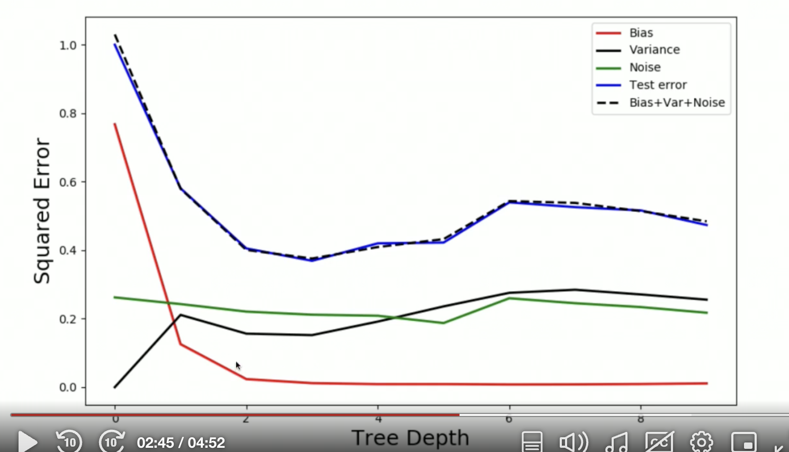
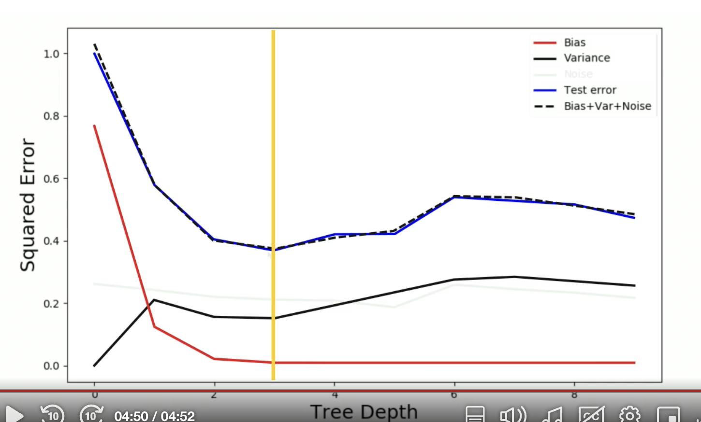
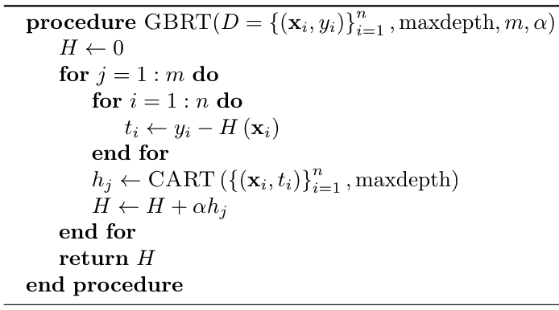
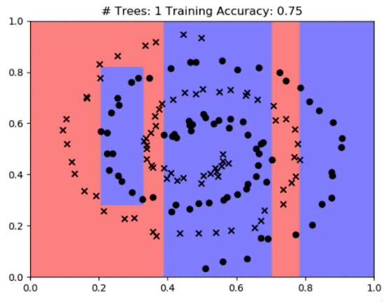

Debugging
You have encountered linear models such as perceptron and nonlinear models such as classification trees. After training these models on a training data set and applying the model to a test data set, you obtain the test error. If the test error is reasonably small, then you are all set. However, what do you do if the test error is high?
There are two main reasons for high test error: Either your model is too simple (i.e., it cannot even learn the training data sufficiently) or your model is too complex (i.e., it is memorizing the training data). In either case, the model won't generalize to testing data. It is hard to tell whether the model is too simple or too complex by just looking at the error. You therefore need a principled way to differentiate the two settings, and that is what we are going to cover in this module: the bias-variance decomposition.
- review of validation error
- decomposing the error into three parts: bias, variance, and noise.
- In practice, we don't know exactly what fraction of the error is variance, what's bias, and what's noise
- rules of thumb that tell us indicators whether variance may be dominating everything or bias may be dominating everything, and then we apply methods or apply remedies to reduce
one of these terms.
- if we had knowledge of the true data distribution, then we could actually compute these terms exactly, or approximately to arbitrary exactness.
- If you have hundreds of datasets, you can train a separate regression tree on each dataset.
- To estimate variance, calculate how much the predictions from these different trees vary around their average prediction for each data point (viz Calculate the squared difference between each tree’s prediction and the average of all predictions). The average squared deviation is the variance.
- To estimate bias, first compute the average prediction across all trees, then measure the squared difference between this average prediction and the true expected output.
- To estimate noise, measure the squared difference between the actual labels and their expected values (the irreducible error in the data).
- Finally, you can analyze the bias-variance tradeoff by repeating this process for trees of different depths and plotting bias, variance, and noise as functions of tree depth. This shows how model complexity affects each source of error.

- So the first thing we observe is, well, the green line, the noise, is roughly constant, right?
- So as the tree depth changes, the noise does not change, because the noise is not a function of the tree; it's just a function of the data. You see a little fluctuation here, and that's just due to
the random sampling.
- The second thing you observe, that if we have a tree depth of zero, that's just a single node, that basically just means we predict the average label. That has zero variance — that doesn't vary at all if you sample different data sets; that makes perfect sense — but has very high bias, because it's biased to a very specific classifier which predicts the average label. As we now increase the tree depth and make our classifier more complex, you see that the bias goes down very, very nicely. Immediately it drops and essentially becomes close to zero, as the tree becomes more and more complex. However, while we're doing this, the variance creeps up, right? So initially the
variance is very, very low. As we increase the tree depth, the variance goes up, goes up,
goes up, goes up, goes up, goes up. Noise stays roughly constant.
- The last thing we are plotting, the blue thing here is the testing error
- the dotted line — the black dotted line is bias plus variance plus noise
- And one thing you can immediately observe is that if your code is correct, the bias plus variance plus noise should pretty much match the testing error exactly.
- And the second thing you can see is that these trend lines kind of follow what's happening with bias and variance. So initially, the bias is so high that pushes the
testing error up, and you do really, really badly. Then as you keep going, the bias goes down, and your testing error goes down with it. However, eventually the variance creeps up too much, and the testing error goes back up. And the best, probably, setting in this specific data set is a tree depth of 3, where the testing error is the lowest. This is the best tradeoff
between bias and variance.
Best tree depth would be:

Validate the Error
how off are your assumptions?
 - for example assume that the problem is linear and use a linear regression algorithm, it doesn't matter how much data you have, right? You will always be wrong if your data is not actually linear, right? You cannot possibly capture this. So the bias is the error that you will always have even if you have unlimited amount of data.
- The variance is the error that you get because you trained on one specific data set and not infinite amounts. The variance says, how much do our classifiers vary if we train them on different data sets? So we basically say if we train our data set classifier hD on data set D, how different is that prediction from the average prediction or the expected prediction you would get if we had infinite amount of data? So what we are measuring here is, how much does the classifier essentially overfit to a specific data set? If this varies a lot, then we have high variance.
- And the noise is the error that you get because your data is not very clean or some labels are wrong
or there's some attributes, some factors in the data that you just don't represent in your feature vectors and you couldn't possibly get right.
- for example assume that the problem is linear and use a linear regression algorithm, it doesn't matter how much data you have, right? You will always be wrong if your data is not actually linear, right? You cannot possibly capture this. So the bias is the error that you will always have even if you have unlimited amount of data.
- The variance is the error that you get because you trained on one specific data set and not infinite amounts. The variance says, how much do our classifiers vary if we train them on different data sets? So we basically say if we train our data set classifier hD on data set D, how different is that prediction from the average prediction or the expected prediction you would get if we had infinite amount of data? So what we are measuring here is, how much does the classifier essentially overfit to a specific data set? If this varies a lot, then we have high variance.
- And the noise is the error that you get because your data is not very clean or some labels are wrong
or there's some attributes, some factors in the data that you just don't represent in your feature vectors and you couldn't possibly get right.

Decomposing the Error
A prediction model might not get an exact label due to training (e.g. vector x might describe a house (nu rooms, sq. footage) and label y for price). e.g. to identically described (per x) homes could sell for different prices. So, instead of saying "a 3-bedroom house costs $400,000" say "given these features there is a probability distribution over possible prices"; mathematically for any given feature vector x there is a conditional distribution P(y|x) over possible labels. Therefore define the "expected label" is simply an average of that distribution, the notation is y bar of x $\bar{y}(x) = \mathbb{E}[y|x]$
y = actual observed label (including randomness)
ybar = the true expected label produced by the data-generating process
h = one trained regression tree
hbar = the avg prediction of many regression trees
Calculate Y bar
def compute_ybar(xTe, OFFSET):
"""
Computes the expected label ybar for a set of inputs xTe,
generated from two normal distributions:
1. the first with mean [0, 0] and standard deviation I, and
2. the second with mean [OFFSET, OFFSET] and standard deviation I
Input:
xTe: Data matrix of shape nx2
OFFSET: The OFFSET passed into the toyData function. The difference in the
mu of normal distributions for points with labels class1 and class2.
Output:
ybar: nx1 vector of the expected labels for each vector in xTe
"""
n, d = xTe.shape
ybar = np.empty(n) # Initialize variable to be returned
# Feel free to use the following function to compute P([x]_\alpha | y)
norm_pdf = lambda x, mu, sigma: np.exp(-0.5 * np.power((x - mu) / sigma, 2)) / (
np.sqrt(2 * np.pi) * sigma
)
# YOUR CODE HERE
for i in range(n):
x1 = xTe[i, 0]
x2 = xTe[i,1]
p1 = norm_pdf(x1, 0, 1) * norm_pdf(x2, 0,1)
p2 = (norm_pdf(x1, OFFSET, 1) * norm_pdf(x2, OFFSET, 1))
post1 = p1 / (p1 + p2)
post2 = p2 / (p1 + p2)
ybar[i] = 1 * post1 + 2 * post2
# END OF YOUR CODE
return ybar
Computer y_bar
example
def compute_hbar(xTe, depth, Nsmall, NMODELS, OFFSET):
"""
Computes the prediction of the average regression tree (hbar) on dataset xTe.
Each of the NMODELS regression trees used in the average tree should be
trained using data from toy_data(OFFSET, Nsmall).
Input:
xTe: Data matrix of shape nx2
depth: Depth of each regression tree to be trained
Nsmall: Number of points in the dataset that each tree is trained on
NMODELS: Number of regression trees to train
OFFSET: The OFFSET passed into the toyData function. The difference in the
mu of normal distributions for points with labels class1 and class2.
Output:
hbar: a nx1 vector of the expected labels for each vector in xTe
"""
n = xTe.shape[0]
hbar = np.zeros(n) # Initialize variable to be returned
# YOUR CODE HERE
for model in range(NMODELS):
xTr, yTr = toy_data(OFFSET, Nsmall)
# Create a regression tree
tree = RegressionTree(depth=depth)
# Fit/train the regression tree
tree.fit(xTr, yTr)
# Use trained regression tree to make predictions
pred = tree.predict(xTe)
hbar += pred
hbar /= NMODELS
# END OF YOUR CODE
return hbar
Bias
What is the inherent error that you obtain from your hypothesis function even with infinite training data; i.e., from your average hypothesis? This is due to your hypothesis function being "biased" to a particular kind of solution (e.g., linear classifier). In other words, bias is inherent to your model. Tells us whether our model is making incorrect assumptions about the data distribution (underfitting)

For example:
see that the difference between training error and test error is small (no overfitting) but both the errors are rather high. This is a sign of underfitting or high bias
train_error = np.mean(np.sign(tree.predict(xTrSpiral)) != yTrSpiral)
test_error = np.mean(np.sign(tree.predict(xTeSpiral)) != yTeSpiral)
print(f"Training Error: {100 * train_error:.2f}%")
print(f"Test Error: {100 * test_error:.2f}%")
Training Error: 31.33%
Test Error: 33.33%
Remedies
- Use more complex models
- Add featurese
- Boosting
Bias = (hbar - ybar)^2
example:
def compute_bias(xTe, depth, Nsmall, NMODELS, OFFSET):
"""
Computes the bias for data set xTe.
Each of the NMODELS regression trees used in the average tree should be
trained using data from toy_data(OFFSET, Nsmall).
Input:
xTe: Data matrix of shape nx2
depth: Depth of each regression tree to be trained
Nsmall: Number of points in the dataset that each tree is trained on
NMODELS: Number of regression trees to train
OFFSET: The OFFSET passed into the toyData function.
The difference in the mu of normal distributions
for points with labels class1 and class2.
Output:
bias: Scalar representing the bias component of the error of xTe
"""
bias = None # Initialize variable to be returned
# YOUR CODE HERE
hbar = compute_hbar(xTe, depth, Nsmall, NMODELS, OFFSET)
ybar = compute_ybar(xTe, OFFSET)
bias = np.mean((hbar - ybar)**2)
# END OF YOUR CODE
return bias
Variance
captures how much your hypothesis function changes if you train on a different training set. How "overspecialized" is your hypothesis to a particular training set? If we have the best possible model for our training data, how far off are we from the average hypothesis?

variance is (h - h_bar)^2
example:
def compute_variance(xTe, depth, hbar, Nsmall, NMODELS, OFFSET):
"""
Computes variance of classifiers trained on datasets from toy_data(OFFSET, Nsmall).
The prediction of the average classifier is assumed to be stored in hbar.
Input:
xTe: Data matrix of shape nx2
depth: Depth of each regression tree to be trained
hbar: nx1 vector of the predictions of hbar on the inputs xTe
Nsmall: Number of points in the dataset that each tree is trained on
NMODELS: Number of regression trees to train
OFFSET: The OFFSET passed into the toyData function.
The difference in the mu of normal distributions
for points with labels class1 and class2.
Output:
variance: Scalar representing the bias component of the error of xTe
"""
n = xTe.shape[0]
vbar = np.zeros(n)
variance = None # Initialize variable to be returned
# YOUR CODE HERE
for model in range(NMODELS):
xTr, yTr = toy_data(OFFSET, Nsmall)
# Create a regression tree
tree = RegressionTree(depth=depth)
# Fit/train the regression tree
tree.fit(xTr, yTr)
# Use trained regression tree to make predictions
pred = tree.predict(xTe)
vbar += (pred-hbar)**2
vbar /= NMODELS
variance = np.mean(vbar)
# END OF YOUR CODE
return variance
Manual Variance Calculation
Educational to show the math behind variance
# Sample model outputs
values = [80, 85, 90, 95, 100]
# Step 1: Calculate the mean
mean = sum(values) / len(values)
# Step 2: Calculate squared differences from the mean
squared_diffs = [(x - mean) ** 2 for x in values]
# Step 3: Calculate variance
variance = sum(squared_diffs) / len(values)
print(f"Mean: {mean}")
print(f"Variance: {variance}")
Remedies
- Add more training data
- Reduce model complexity (complex models, like PHI, are more prone to high variance)
- Bagging
Noise
 Noise refers to intrinsic variation in the labels that even the best classifier cannot capture, either because the features are not enough to explain the labels or due to incorrect labels.
Noise refers to intrinsic variation in the labels that even the best classifier cannot capture, either because the features are not enough to explain the labels or due to incorrect labels.
* Noise is the hardest of the three because, unlike bias and variance, you usually cannot directly measure true noise.
* Noise is the random variation in the data that no model can reasonably learn.
** Examples:
** Sensor inaccuracies
** User typos
** Missing context
** Random market fluctuations
** Measurement errors
Noise is (y - y_hat)^2
Example:
def compute_noise(xTe, yTe, OFFSET):
"""
Computes the noise (i.e., square mean of ybar - y) for a
set of inputs (xTe, yTe) generated with toyData using OFFSET.
Input:
xTe : Data matrix of shape nx2
yTe : n-dimensional array of true labels
OFFSET : The OFFSET passed into the toyData function.
The difference in the mu of normal distributions
for points with labels class1 and class2.
Output:
noise : Scalar representing the noise component
of the error of xTe.
"""
noise = None # Initialize variable to be returned
# YOUR CODE HERE
y_bar = compute_ybar(xTe, OFFSET)
residuals = y_bar - yTe
noise = np.mean(residuals ** 2)
# END OF YOUR CODE
return noise
Example all together
# Mean value of training and testing datasets
OFFSET = 1.75
# Size of small training dataset
Nsmall = 75
# Size of large testing dataset (approx. infinity)
Nbig = 7500
# Number of models used for computations
NMODELS = 100
# Depths to use for the models
depths = [0, 1, 2, 3, 4, 5, 6, np.inf]
# Initialize variables
Ndepths = len(depths)
lbias = np.zeros(Ndepths)
lvariance = np.zeros(Ndepths)
lnoise = np.zeros(Ndepths)
lsum = np.zeros(Ndepths)
lerror = np.zeros(Ndepths)
# Evaluate classifier models of different depths
for i in range(Ndepths):
depth = depths[i]
# Dataset to use as an approximation of the true test dataset
xTe, yTe = toy_data(OFFSET, Nbig)
# Estimate variance
hbar = compute_hbar(xTe, depth, Nsmall, NMODELS, OFFSET)
variance = compute_variance(xTe, depth, hbar, Nsmall, NMODELS, OFFSET)
# Estimate bias
bias = compute_bias(xTe, depth, Nsmall, NMODELS, OFFSET)
# Estimate noise
noise = compute_noise(xTe, yTe, OFFSET)
# Estimate generalized error (average mean squared error)
error = 0
for j in range(NMODELS):
xTr2, yTr2 = toy_data(OFFSET, Nsmall)
model = RegressionTree(depth=depth)
model.fit(xTr2, yTr2)
error += np.mean((model.predict(xTe) - yTe) ** 2)
error /= NMODELS
# Store results for bias, variance, noise, and error
lbias[i] = bias
lvariance[i] = variance
lnoise[i] = noise
lsum[i] = lbias[i] + lvariance[i] + lnoise[i]
lerror[i] = error
# Print results for bias, variance, noise, and error
if np.isinf(depths[i]):
print(
f"Depth infinite - Var: {lvariance[i]:.4f}, Bias: {lbias[i]:.4f}, ",
f"Noise: {lnoise[i]:.4f}, Var+Bias+Noise: {lsum[i]:.4f}, ",
f"Error: {lerror[i]:.4f}",
)
else:
print(
f"Depth {depths[i]} - Var: {lvariance[i]:.4f}, Bias: {lbias[i]:.4f}, ",
f"Noise: {lnoise[i]:.4f}, Var+Bias+Noise: {lsum[i]:.4f}, ",
f"Error: {lerror[i]:.4f}",)
visualize results
plt.figure(figsize=(9, 6))
plt.plot(lvariance[:Ndepths], "*", linestyle="-", linewidth=2, label="Variance (Var)")
plt.plot(lbias[:Ndepths], "*", linestyle="-", linewidth=2, label="Bias")
plt.plot(lnoise[:Ndepths], "*", linestyle="-.", linewidth=2, label="Noise")
plt.plot(lerror[:Ndepths], "*", linestyle="-", linewidth=2, label="Error")
plt.plot(lsum[:Ndepths], "*", c="black", linestyle="dotted", linewidth=2, label="Var+Bias+Noise")
plt.legend(loc="upper right")
plt.xlabel("Depth", fontsize=12)
plt.ylabel("Mean Squared Error", fontsize=12)
plt.xticks([i for i in range(Ndepths)], depths);
Mitigating Errors
Issues of Variance: Bagging
Stands for bootstrap aggregating
* Used to reduce high variance
* Also known as bootstrap aggregating
* Method to create an ensemble of classifiers that typically have very low variance
The weak law of large numbers tells us that the sample mean of a random variable approaches the population mean as the number of samples goes to infinity. We apply this to classifiers and average many classifiers trained on different data sets. If the data sets were truly sampled independently from the original data distribution, the variance term would reduce to 0. As we do not have access to the underlying data distribution, we sample bootstraps instead. Although the resulting training sets are not independent, the resulting averaged classifier still has much reduced variance.
* Allows to train classifiers in parallel
- Bootstrap data
- Train a classifier on each dataset
- Generate hhat as the average results of all these classifiers (this won't quite equal hhat because we are using bootstrapping)
- - Bagging doesn't usually increase bias
* This average is the bagged classifier (not the ensemble classifier because the training sets Dsubscripti are not i.i.d. (independent and identically distributed) from P^n).
Out-of-Bag (OOB) Estimation
* Bootstrap creates datasets with replacement; some points excluded from each subset
* For each data point, identify classifiers NOT trained on it (out-of-bag classifiers)
* Ensemble only those OOB classifiers to estimate validation error for that point
* Average all OOB errors to get true validation error estimate
* Advantage: Train on full dataset while getting free validation error estimate (no cross-validation needed)
* Use OOB error to determine when to stop bagging (monitor until plateau)
CART works very well for bagging, (Random Forest)[random_forest.md] even more so.
A Random Forest is bagging applied to regression trees
Bootstrapping
- Can use boostrapping to estimate the variance of a classifier
- If you know how much of your error is variance you know your error is at least x high.
- Can tell you if it's worth applything methods to reduce variance
Regular way to figure variance:
* It would be easy if you had many different data sets, right? So imagine you, for example, had a thousand different data sets all drawn from the original data distribution. Then you could just train a classifier on each one of these thousand data sets. You have a thousand classifiers, you average their predictions; now you get the expected classifier — an approximation thereof — and you can compute the average squared difference of a prediction with the average classifier. Unfortunately, you can't do this because you don't have a thousand data sets; in practice, you typically only have one data set.
Can apply boostrapping
1. Start with a dataset containing N data points (original data distribution is unknown)
2. Generate new datasets by resampling with replacement from the original dataset.
- - Think of the dataset as a bag of data points
3. Randomly pick one data point.
4. Put this data point in your new dataset and return it back to the original too
5. Repeat until N points have been selected
**Properties of a Bootstrap Dataset**
* Has the same size (N) as the original dataset.
* Is not identical to the original dataset because:
- - Some data points appear multiple times.
- - Some data points may not appear at all.
* Contains only data points from the original dataset.

**Repeating the Process**
* Create many bootstrap datasets (e.g., 100, 1000, or more).
* Each bootstrap dataset is a different resampled version of the original data.
**Estimating Variance**
* Train a classifier on each bootstrap dataset.
* This results in many classifiers (e.g., 1000 classifiers).
* Use the variation in their predictions to estimate the variance of the learning algorithm.
**Important Limitation**
* Bootstrap estimates are not exact.
* They generally provide a lower-bound estimate of the true variance:
- - Estimated variance is usually slightly lower than the actual variance.
**Why It Is Useful**
* Helps determine how much prediction error is due to variance.
* Provides insight into the uncertainty of the classifier.
* If bootstrap estimates a certain variance:
- - The true variance is likely at least that much, and probably more.
- - The classifier's uncertainty is at least as large as the bootstrap estimate.
Issues with Bias: Boosting
- Gradient Boosted Regression Trees (GBRT):
- Each new tree is trained to fix the mistakes made by all previous trees
- Each correction is gbased on the remaining error, not on the original target
- combines trees in ensembles, similar to bagging, however, instead of using full trees (with high variance and low bias), here we train trees of very limited depth (with low variance and high bias)
- Especially popular in web search engines (where multiple features describe a page, query, and releationship between the two and prediciton if end-user will select it or not)
- very fast algorithm
- GBRT is boosting applied to regression trees
- Reduces bias
- GBRT learns an ensemble of trees, and each tree is trained to correct the residual (the remaining error) of the existing ensemble
- approach is very similar to gradient descent, except that in each iteration we update the ensemble instead of the model parameters
pseudo GBRT code

Visualization

Gradient Descent in Functional Space
- highly related to gradient descent
- In each iteration of boosting, we add a weak learner that adjusts the training predictions to be closer to the true labels.
- Boosting is a very general concept with many instantiations, some of which have specialized names such as GBRT, LogitBoost, and AdaBoost.
- there are two loss functions being considered in gradient boosting:
- global loss function L that the ensemble classifier H is minimizing
- The loss that the weak learner hsubj is minimizing
- Model starts that predicts 0 for everything (this will be horrible results compatred to the actual training label resutls)
- Compute the errors (target = actual - prediction)
- Fit the tree to the residuals
tree = RegressionTreee(maxdepth)
tree.fix(xTr, truth) # where truth are the residuals (actual - prediciton)
- Save the tree to a list of trees
- Save the alpha to a list of alphas
- Hyperparameter in garadient boosting
- Determins how much each new treee is allowed to change the overal model
- Model's learning rate/step size
- - - Large alpha learns quickly but is easier to overfix and mistakes are amplified
- - - Small alpha is more stable and generalizes better but needs more trees
- Alpha number is not learned from data but chosen by person training the model
Common Values
1.0 (rarely used)
0.3 (sometimes used)
0.1 (very common)
0.05 (Common for larger models, ex 600 trees)
0.01 (very conservative; requires many trees, ex. 3,000)
- Evaluate the two (evalboosforest function)
def evalboostforest(trees, X, alphas=None):
"""
Evaluates data points X using trees using weights alphas (optional).
Input:
trees: List of length m of RegressionTree decision trees
X: nxd matrix of data points
alphas: m-dimensional weight vector for the ensemble's prediction
Output:
pred: n-dimensional vector of predictions
"""
m = len(trees)
n, _ = X.shape
if alphas is None:
alphas = np.ones(m) / len(trees)
pred = np.zeros(n)
for tree, alpha in zip(trees, alphas):
pred += alpha * tree.predict(X)
return pred
- Compute new residuals from results returned from step 6. (e.g. truth = yTr - pred)
- Repeat until model is extremely accurate
def GBRT(xTr, yTr, m, maxdepth=4, alpha=0.1):
"""
An implementation of Gradient Boosted Regression Trees with m trees of depth=maxdepth.
Input:
xTr: n x d matrix of data points
yTr: n-dimensional vector of labels
m: Number of trees in the forest
maxdepth: Maximum depth of tree
alpha: Learning rate for the GBRT (also the weight for each tree in the ensemble)
Output:
trees, alphas
trees: List of decision trees of length m
alphas: Weights of each tree
"""
trees = [] # Initialize list for storing trees
alphas = [] # Initialize list for storing alphas (weights)
# Ensemble tree H = 0 right now; therefore, t_i = y_i for all i.
# Make a copy of the ground truth label; this will be the initial
# ground truth for the first GBRT.
truth = np.copy(yTr)
# For each iteration:
# - Create a tree, fit to xTr and truth
# - Append this tree to list of trees
# - Append alpha to list of alphas
# - Generate sum of weighted predictions of all trees with given alphas
# - Calculate new truth values by subtracting weighted predictions from yTr
# - Return list of trees and list of alphas
# YOUR CODE HERE
for i in range(m):
tree = RegressionTree(maxdepth)
tree.fit(xTr, truth)
trees.append(tree)
alphas.append(alpha)
pred = evalboostforest(trees, xTr, alphas)
truth = yTr - pred
# END OF YOUR CODE
return trees, alphas
Extended Derivations & Python Lab
The sections above cover the concepts and code recipes at a working-data-scientist level. This appendix adds (1) the formal derivations from the CIS535 PDF that are worth doing on paper at least once, and (2) runnable NumPy / scikit-learn code that lets you see every idea work end-to-end.
A. Extended Derivations from the PDF
A.1 Setup and notation
Let the data distribution be $P(\mathbf{x}, y)$ and a training set $D = {(\mathbf{x}1, y1), \ldots, (\mathbf{x}n, yn)}$ be drawn i.i.d. from $P^n$. A learning algorithm $\mathcal{A}$ produces a hypothesis $h_D = \mathcal{A}(D)$. Define:
$$\bar y(\mathbf{x}) \;=\; \mathbb{E}_{y \sim P(y|\mathbf{x})}[\,y\,] \;=\; \int y\, P(y \mid \mathbf{x})\, dy \quad\text{(expected label)},$$
$$\bar h(\mathbf{x}) \;=\; \mathbb{E}{D \sim P^n}[\,hD(\mathbf{x})\,] \;=\; \int h_D(\mathbf{x})\, P^n(D)\, dD \quad\text{(expected hypothesis)}.$$
The generalization error of the algorithm is
$$\epsilon(\bar h) \;=\; \mathbb{E}{\mathbf{x},y,D}\big[(hD(\mathbf{x}) - y)^2\big].$$
A.2 The bias–variance–noise identity (line-by-line)
Insert $-\bar h(\mathbf{x}) + \bar h(\mathbf{x}) - \bar y(\mathbf{x}) + \bar y(\mathbf{x})$ inside the square:
$$
(hD(\mathbf{x}) - y)^2
\;=\;
\big(\underbrace{hD(\mathbf{x}) - \bar h(\mathbf{x})}{A} \;+\; \underbrace{\bar h(\mathbf{x}) - \bar y(\mathbf{x})}{B} \;+\; \underbrace{\bar y(\mathbf{x}) - y}_{C}\big)^2.
$$
Expanding gives $A^2 + B^2 + C^2 + 2AB + 2AC + 2BC$. Taking expectations, all three cross terms vanish:
- $\mathbb{E}_D[A] = \mathbb{E}D[hD - \bar h] = 0$, so $\mathbb{E}[AB] = B \cdot \mathbb{E}_D[A] = 0$ and $\mathbb{E}[AC] = 0$ (since $A$ depends only on $D$ and $C$ only on $y \mid \mathbf{x}$, and they are conditionally independent).
- $\mathbb{E}_{y \mid \mathbf{x}}[C] = \mathbb{E}[y \mid \mathbf{x}] - \bar y(\mathbf{x}) = 0$, so $\mathbb{E}[BC] = 0$.
We are left with the clean decomposition:
$$
\boxed{\;\underbrace{\mathbb{E}!\big[(hD(\mathbf{x}) - y)^2\big]}{\text{Generalization error}}
\;=\;
\underbrace{\mathbb{E}!\big[(hD(\mathbf{x}) - \bar h(\mathbf{x}))^2\big]}{\text{Variance}}
\;+\;
\underbrace{(\bar h(\mathbf{x}) - \bar y(\mathbf{x}))^2}{\text{Bias}^2}
\;+\;
\underbrace{\mathbb{E}!\big[(\bar y(\mathbf{x}) - y)^2\big]}{\text{Noise}}.\;}
$$
Three key consequences:
- Noise is a floor. No algorithm can drive the total error below the noise.
- Bias is independent of $|D|$. Even with infinite data, a wrong hypothesis class stays biased.
- Variance shrinks as classifiers become "more averaged." This is exactly why bagging works.
A.3 The dart-board mental model, made precise
| Setting |
Bias |
Variance |
Picture |
| Ideal |
low |
low |
tight cluster on bullseye |
| Overfit |
low |
high |
scattered around bullseye |
| Underfit |
high |
low |
tight cluster off bullseye |
| Broken |
high |
high |
scattered off bullseye |
| Noisy labels |
— |
— |
bullseye is shaking (dartboard moves) |
A.4 Why the bagged classifier does not fully reach $\bar h$
The weak law of large numbers says that if $D1, \ldots, Dm$ were i.i.d. from $P^n$, then
$$\tilde h(\mathbf{x}) = \tfrac{1}{m}\sum_{i=1}^m h_{D_i}(\mathbf{x}) \;\xrightarrow{m\to\infty}\; \bar h(\mathbf{x}),$$
which would drive variance to $0$. In bagging we only have one $D$, so we substitute bootstrap samples $D_i \sim Q^n$ where $Q$ is uniform-with-replacement over $D$. The bootstraps are not independent of each other (they all come from the same $D$), so
$$\hat hD(\mathbf{x}) = \tfrac{1}{m}\sum{i=1}^m h_{D_i}(\mathbf{x}) \;\not\to\; \bar h(\mathbf{x}).$$
Empirically, bagging still slashes variance dramatically because a large fraction of the variance of $h_D$ comes from which specific points are in the training set — exactly what bootstrapping resamples.
A.5 The 63.2% bootstrap fact
For a bootstrap of size $n$ drawn from a set of size $n$, the probability a specific point is not selected is
$$\left(1 - \tfrac{1}{n}\right)^n \;\xrightarrow{n\to\infty}\; e^{-1} \approx 0.368.$$
So in expectation each bootstrap contains $\approx 63.2\%$ of the unique original points, and the remaining ~36.8% are the out-of-bag (OOB) samples used as a "free" validation set.
A.6 Boosting as functional gradient descent
Think of the ensemble $H$ evaluated at the $n$ training points as an $n$-dimensional vector $H = (H(\mathbf{x}_1), \ldots, H(\mathbf{x}_n))$. For a differentiable loss $\mathcal{L}(H)$, the vector gradient is
$$G_i \;=\; \frac{\partial \mathcal{L}}{\partial H(\mathbf{x}_i)}.$$
Squared loss $\mathcal{L} = \tfrac{1}{2}\sumi (yi - H(\mathbf{x}_i))^2$ gives
$$Gi = H(\mathbf{x}i) - yi, \qquad -Gi = y_i - H(\mathbf{x}i) \;=\; ri \;\;\text{(the residual)}.$$
We can't literally subtract a vector from a function, so we fit a weak learner $h_j$ to mimic $-G$ on the training points:
$$hj \;=\; \arg\min{h \in \mathcal{H}} \sum_{i=1}^n \big(h(\mathbf{x}i) - ri\big)^2,$$
then update $H \leftarrow H + \alpha h_j$. This is why GBRT with squared loss reduces to "fit a regression tree to the current residual."
For logistic loss $\mathcal{L} = \sumi \log(1 + e^{-yi H(\mathbf{x}i)})$ (LogitBoost), the negative gradient is $ti = yi / (1 + e^{yi H(\mathbf{x}i)})$ — a "soft residual." For exponential loss (AdaBoost), $ti = yi e^{-yi H(\mathbf{x}_i)}$ — samples the current ensemble misclassifies get exponentially larger weights.
A.7 Why bagging + trees is a match made in heaven
Trees are ideal weak learners for bagging because they are:
- High variance, low bias at full depth (they memorize the training set).
- Fast to train and evaluate — a thousand of them still runs cheaply.
- Invariant to feature scaling — no preprocessing headaches.
Trees are ideal weak learners for boosting because a shallow tree (depth 3–5) is a high-bias, low-variance learner — exactly what boosting is designed to combine.
B. Python Lab
All snippets are self-contained NumPy / scikit-learn. Copy any block into a notebook.
B.1 Bias / variance / noise estimated on a toy Gaussian dataset
Reproduces the PDF's demo where the true distribution is known.
import numpy as np
from sklearn.tree import DecisionTreeRegressor
OFFSET = 1.75
def toy_data(offset, n, rng=None):
rng = rng or np.random.default_rng()
n1 = n // 2
n2 = n - n1
X1 = rng.normal(0.0, 1.0, size=(n1, 2))
X2 = rng.normal(offset, 1.0, size=(n2, 2))
X = np.vstack([X1, X2])
y = np.concatenate([np.ones(n1), 2*np.ones(n2)]) # labels 1 and 2
return X, y
def compute_ybar(X, offset):
"""True expected label E[y|x] given the known Gaussian mixture."""
def npdf(z, mu): return np.exp(-0.5*((z - mu)**2)) / np.sqrt(2*np.pi)
p1 = npdf(X[:,0], 0.0) * npdf(X[:,1], 0.0)
p2 = npdf(X[:,0], offset) * npdf(X[:,1], offset)
post1 = p1 / (p1 + p2)
post2 = p2 / (p1 + p2)
return 1*post1 + 2*post2
def bvn_decomposition(depths, Nsmall=75, Nbig=5000, NMODELS=50, offset=OFFSET):
rng = np.random.default_rng(0)
Xte, yte = toy_data(offset, Nbig, rng)
ybar = compute_ybar(Xte, offset)
out = {}
for d in depths:
preds = np.zeros((NMODELS, Nbig))
errs = np.zeros(NMODELS)
for m in range(NMODELS):
Xtr, ytr = toy_data(offset, Nsmall, rng)
tree = DecisionTreeRegressor(max_depth=None if d == np.inf else d,
random_state=m).fit(Xtr, ytr)
preds[m] = tree.predict(Xte)
errs[m] = np.mean((preds[m] - yte)**2)
hbar = preds.mean(axis=0)
variance = np.mean((preds - hbar)**2)
bias2 = np.mean((hbar - ybar)**2)
noise = np.mean((ybar - yte)**2)
error = errs.mean()
out[d] = dict(bias2=bias2, variance=variance, noise=noise,
sum=bias2+variance+noise, error=error)
return out
results = bvn_decomposition([1, 2, 3, 4, 6, 10, np.inf])
for d, r in results.items():
print(f"depth={str(d):>5} bias2={r['bias2']:.3f} var={r['variance']:.3f} "
f"noise={r['noise']:.3f} sum={r['sum']:.3f} error={r['error']:.3f}")
You should see:
- Noise ≈ constant across depths (it's a property of the data, not the tree).
- Bias² dominates at shallow depths and drops fast.
- Variance grows with depth.
- sum ≈ error — the identity is verified numerically.
B.2 Plot the classic bias–variance U-curve
import matplotlib.pyplot as plt
import numpy as np
depths = [1, 2, 3, 4, 5, 6, 8, 10, 15]
r = bvn_decomposition(depths, NMODELS=40)
x = list(range(len(depths)))
bias2 = [r[d]['bias2'] for d in depths]
var = [r[d]['variance'] for d in depths]
noise = [r[d]['noise'] for d in depths]
err = [r[d]['error'] for d in depths]
tot = [r[d]['sum'] for d in depths]
plt.plot(x, bias2, 'o-', label='Bias²')
plt.plot(x, var, 'o-', label='Variance')
plt.plot(x, noise, 'o-.',label='Noise')
plt.plot(x, err, 'o-', label='Test error', linewidth=2)
plt.plot(x, tot, 'k:', label='Bias²+Var+Noise')
plt.xticks(x, depths); plt.xlabel('max_depth'); plt.ylabel('MSE'); plt.legend()
plt.title('Bias–Variance–Noise decomposition (toy Gaussians)')
The Test error curve should sit essentially on top of the Bias²+Var+Noise curve — that's the sanity check.
B.3 Learning curves to diagnose bias vs variance in practice
When you don't know the true distribution, use a learning curve (training vs validation error as a function of training-set size):
- Gap between them is large, validation error decreasing → high variance (add data / regularize / bag).
- Both curves flat and high, gap is small → high bias (add features / more complex model / boost).
import numpy as np, matplotlib.pyplot as plt
from sklearn.datasets import load_breast_cancer
from sklearn.model_selection import learning_curve
from sklearn.tree import DecisionTreeClassifier
X, y = load_breast_cancer(return_X_y=True)
fig, axes = plt.subplots(1, 2, figsize=(12, 4), sharey=True)
for ax, (label, model) in zip(axes, [
('High-bias (depth=1)', DecisionTreeClassifier(max_depth=1, random_state=0)),
('High-variance (depth=None)', DecisionTreeClassifier(random_state=0)),
]):
sizes, tr, va = learning_curve(model, X, y, cv=5,
train_sizes=np.linspace(0.1, 1.0, 8))
ax.plot(sizes, 1 - tr.mean(axis=1), 'o-', label='train error')
ax.plot(sizes, 1 - va.mean(axis=1), 'o-', label='val error')
ax.set_title(label); ax.set_xlabel('training set size'); ax.legend()
axes[0].set_ylabel('error')
B.4 Bootstrap variance estimation from a single dataset
import numpy as np
from sklearn.datasets import load_breast_cancer
from sklearn.model_selection import train_test_split
from sklearn.tree import DecisionTreeClassifier
X, y = load_breast_cancer(return_X_y=True)
X_tr, X_te, y_tr, y_te = train_test_split(X, y, test_size=0.3, random_state=0)
B = 200
rng = np.random.default_rng(0)
preds = np.zeros((B, len(X_te)))
for b in range(B):
idx = rng.integers(0, len(X_tr), len(X_tr))
clf = DecisionTreeClassifier(random_state=b).fit(X_tr[idx], y_tr[idx])
preds[b] = clf.predict_proba(X_te)[:, 1] # probability of class 1
mean_pred = preds.mean(axis=0)
per_point_var = ((preds - mean_pred)**2).mean(axis=0)
print(f"Estimated (lower-bound) variance across test points: {per_point_var.mean():.4f}")
print(f"Highest-variance test points (least confident):",
np.argsort(-per_point_var)[:5])
Points with high bootstrap variance are exactly where the classifier is unsure — very useful for active learning and safe deployment.
B.5 Bagging vs a single tree — measure the variance drop
import numpy as np
from sklearn.datasets import load_breast_cancer
from sklearn.model_selection import train_test_split
from sklearn.tree import DecisionTreeClassifier
from sklearn.ensemble import BaggingClassifier
X, y = load_breast_cancer(return_X_y=True)
def repeat_test_error(model_factory, trials=30, test_size=0.3):
errs = []
for seed in range(trials):
X_tr, X_te, y_tr, y_te = train_test_split(X, y, test_size=test_size,
random_state=seed)
model = model_factory(seed).fit(X_tr, y_tr)
errs.append(1 - model.score(X_te, y_te))
return np.array(errs)
single = repeat_test_error(lambda s: DecisionTreeClassifier(random_state=s))
bagged = repeat_test_error(lambda s: BaggingClassifier(
DecisionTreeClassifier(), n_estimators=100, random_state=s))
print(f"Single tree mean err={single.mean():.3f} var={single.var():.5f}")
print(f"Bagged trees mean err={bagged.mean():.3f} var={bagged.var():.5f}")
Both the mean error and the variance across trials should drop — that's bagging doing its job.
B.6 Out-of-bag (OOB) error for "free" validation
from sklearn.datasets import load_breast_cancer
from sklearn.ensemble import RandomForestClassifier
X, y = load_breast_cancer(return_X_y=True)
rf = RandomForestClassifier(n_estimators=500, oob_score=True,
n_jobs=-1, random_state=0).fit(X, y)
print(f"Training accuracy: {rf.score(X, y):.3f}")
print(f"OOB accuracy: {rf.oob_score_:.3f} <- free validation estimate")
Trained on 100% of the data, yet the OOB score is a legitimate validation estimate.
B.7 Random Forest hyperparameter rules of thumb, verified
import numpy as np
from sklearn.datasets import load_breast_cancer
from sklearn.model_selection import cross_val_score
from sklearn.ensemble import RandomForestClassifier
X, y = load_breast_cancer(return_X_y=True)
d = X.shape[1]
# Sweep m (n_estimators) — "more is better, then plateau"
print("Effect of m (n_estimators):")
for m in [1, 5, 10, 50, 100, 500, 1000]:
s = cross_val_score(RandomForestClassifier(
n_estimators=m, max_features='sqrt', random_state=0, n_jobs=-1),
X, y, cv=5).mean()
print(f" m={m:4d} cv acc={s:.3f}")
# Sweep k (max_features) — sqrt(d) rule of thumb
print(f"\nEffect of k (max_features), d={d}, sqrt(d)≈{int(np.sqrt(d))}:")
for k in [1, 2, 5, int(np.sqrt(d)), d // 2, d]:
s = cross_val_score(RandomForestClassifier(
n_estimators=200, max_features=k, random_state=0, n_jobs=-1),
X, y, cv=5).mean()
print(f" k={k:2d} cv acc={s:.3f}")
B.8 GBRT from scratch, matching sklearn on a regression problem
import numpy as np
from sklearn.tree import DecisionTreeRegressor
def gbrt_fit(X, y, n_estimators=200, max_depth=3, alpha=0.1):
"""Textbook GBRT with squared loss: fit trees to residuals."""
trees, init = [], y.mean()
pred = np.full_like(y, init, dtype=float)
for _ in range(n_estimators):
residual = y - pred
tree = DecisionTreeRegressor(max_depth=max_depth).fit(X, residual)
pred += alpha * tree.predict(X)
trees.append(tree)
return init, trees, alpha
def gbrt_predict(init, trees, alpha, X):
p = np.full(X.shape[0], init, dtype=float)
for t in trees:
p += alpha * t.predict(X)
return p
# Compare to sklearn on a synthetic curve
rng = np.random.default_rng(0)
X = rng.uniform(-3, 3, size=(300, 1))
y = np.sin(X).ravel() + 0.2 * rng.normal(size=300)
init, trees, alpha = gbrt_fit(X, y, n_estimators=300, max_depth=3, alpha=0.05)
mine_mse = ((gbrt_predict(init, trees, alpha, X) - y)**2).mean()
from sklearn.ensemble import GradientBoostingRegressor
skl = GradientBoostingRegressor(n_estimators=300, max_depth=3,
learning_rate=0.05, random_state=0).fit(X, y)
skl_mse = ((skl.predict(X) - y)**2).mean()
print(f"scratch GBRT train MSE = {mine_mse:.4f}")
print(f"sklearn GBRT train MSE = {skl_mse:.4f}")
The two numbers should be extremely close.
B.9 Watch the residual shrink iteration by iteration
import numpy as np, matplotlib.pyplot as plt
from sklearn.tree import DecisionTreeRegressor
rng = np.random.default_rng(0)
X = np.sort(rng.uniform(-3, 3, 200)).reshape(-1, 1)
y = np.sin(X).ravel() + 0.1*rng.normal(size=200)
pred = np.zeros_like(y); alpha = 0.3
fig, axes = plt.subplots(1, 4, figsize=(16, 3.5), sharey=True)
for ax, m in zip(axes, [1, 5, 20, 100]):
pred = np.zeros_like(y)
for _ in range(m):
r = y - pred
pred += alpha * DecisionTreeRegressor(max_depth=3).fit(X, r).predict(X)
ax.scatter(X, y, s=10, alpha=0.4)
ax.plot(X, pred, lw=2, label=f'{m} trees')
ax.set_title(f'{m} boosting rounds'); ax.legend()
Each frame shows the ensemble closing the gap to the true labels — the visualization from the PDF's GBRT video.
B.10 Bagging vs Boosting — head-to-head comparison
from sklearn.datasets import load_breast_cancer
from sklearn.model_selection import cross_val_score
from sklearn.ensemble import (RandomForestClassifier,
GradientBoostingClassifier,
BaggingClassifier)
from sklearn.tree import DecisionTreeClassifier
X, y = load_breast_cancer(return_X_y=True)
models = {
'single tree, depth=1 (high bias) ': DecisionTreeClassifier(max_depth=1, random_state=0),
'single tree, full (high variance) ': DecisionTreeClassifier(random_state=0),
'bagging (100 full trees) ': BaggingClassifier(
DecisionTreeClassifier(), n_estimators=100, random_state=0),
'random forest (500) ': RandomForestClassifier(
n_estimators=500, random_state=0, n_jobs=-1),
'gradient boosting (200 x depth=3) ': GradientBoostingClassifier(
n_estimators=200, max_depth=3, learning_rate=0.05, random_state=0),
}
for name, m in models.items():
s = cross_val_score(m, X, y, cv=5)
print(f"{name} cv acc = {s.mean():.3f} ± {s.std():.3f}")
You should see: bagging fixes the high-variance single tree, and gradient boosting outperforms the high-bias stump.
C. Common pitfalls (memorize these)
- More data does not fix high bias. Adding training data only tightens the gap between train and validation error; it will not push a fundamentally under-specified model below your target $\epsilon$.
- More features do not fix high variance. Adding features (or model capacity) increases variance. Do the opposite: regularize, prune, bag.
- Bootstrap variance is a lower bound. Bootstraps aren't independent of $D$, so the reported variance is optimistic. If bootstrap says variance = 0.05, the true variance is at least 0.05, probably more.
- OOB error is not free lunch when data is tiny. With very small $n$, some points may land OOB in only a handful of trees — the OOB estimate becomes noisy.
- Bagging doesn't help low-variance models. Bagging a linear model or a shallow tree barely moves the needle. It's designed for high-variance / low-bias learners.
- Boosting can and does overfit. Unlike bagging,
n_estimators is a real hyperparameter — monitor validation error and use early stopping (n_iter_no_change in sklearn).
- Learning rate ↔ n_estimators tradeoff. Halving $\alpha$ roughly requires doubling
n_estimators. Small $\alpha$ + many trees ≈ better generalization but slower training.
- Random Forest feature importances are biased toward high-cardinality features. Use
sklearn.inspection.permutation_importance for honest importance scores.
- Class imbalance breaks default residuals. In GBRT for classification, if 99% of
y is class 0, the initial residuals are tiny for the majority class — use class_weight or a loss like deviance explicitly (sklearn does this correctly, but from-scratch code often doesn't).
- Ensemble ≠ interpretability. You traded a single interpretable tree for hundreds. Use
plot_tree on the base estimator, SHAP values, or partial dependence plots to inspect what the ensemble actually learned.
- Set
random_state everywhere. Splits, bootstrap indices, and feature subsampling are all random — without a seed, "the same code" gives different answers every run.